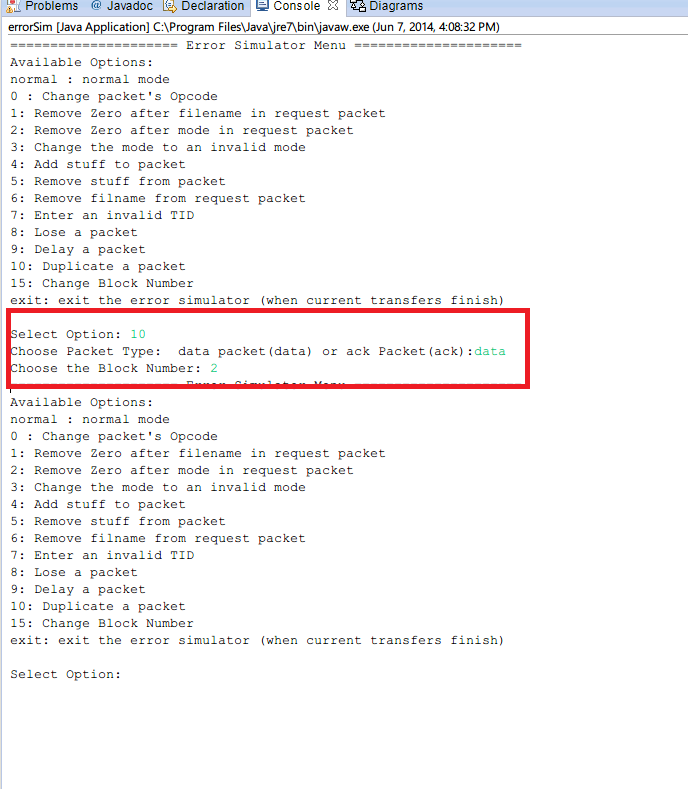
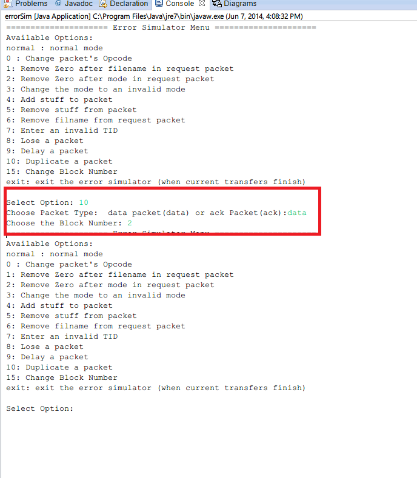

Testing Iteration 3
Error Codes 1,2,3, and 6
- Run Server.java file. Press enter to use the default (server-files) folder
- Run errorSim.java file. Type normal and press enter.
- Run Client.java Press enter to use the default (server-files) folder. Please restart the client for clarity (not necessary).
- Error Code 1
- Type "read " then a name of any file that does not exist on a server ("read asdasdasdsa.txt") you will see the proper error code message.
- Type "write " then a name of any file that does not exist on a client ("write asdasdasds.txt"). Here, we do not even send a request if the file does not exist on the client.
- Error Code 2
- Type "read bananaCake.txt" to try to read a readonly file.
- Type "read chocolate.txt" to try to read a hidden file.
- Type "write cantEatThis.txt" to try to write a readonly file.
- Type "write muffins.txt" to try to write a hidden file.
- Error Code 3
- Type "read " then a name of any file that you have
- The console will print the following message "There is not enough space on the disk to write your file"
- The file will not be transferred as the disk is full directory and the program will prompt you to select
- Error Code 6
- In the Client console, type "read loremServer.txt" once. Wait for the file to finish
- In the Client console, type "read loremServer.txt" again.
From this document page onwards, it will be assumed that the project has been imported in eclipse and setupTestFiles.java has been run at least once. If you have not done so, click this link to do so.
It was a MUST that you have followed the Normal Operation procedure because the steps of running the files in a sequence have been omited. This also allows you to have a control to test against. Simply click "Previous Content" link from the above menu
Summary of above steps

Click to Enlarge

{kind=link}
Click to Enlarge
Below is a fragment of the Client console output after trying to write a non-existant file
Select Option: write asdasdasdasd.txt Current Thread: 1 Connection on Port: 64456 File does not exist, ensure the filename is correct Failed to send asdasdasdasd.txt: "File does not exist"
Below is a fragment of the Client console output after trying to read a non-existant file
Select Option: read asdasdas.txt Current Thread: 1 Connection on Port: 64453 Current Thread: 1 Received error packet. Code: 1, Type: FILE_NOT_FOUND, Message: "Could not find: asdasdas.txt" Current Thread: 1 Aborting transfer Failed to get asdasdas.txt: "Could not find: asdasdas.txt"
Before doing this step, ensure you have run setupTestFiles.java
Below is a fragment of the Client console output after trying to read a hidden file
Select Option: read chocolate.txt Current Thread: 1 Connection on Port: 62365 Current Thread: 1 Received error packet. Code: 2, Type: ACCESS_VIOLATION, Message: "Access violation: File is hidden" Current Thread: 1 Aborting transfer Failed to get chocolate.txt: "Access violation: File is hidden"
Below is a fragment of the Client console output after trying to read a readonly file
Select Option: read bananacake.txt Current Thread: 1 Connection on Port: 51482 Current Thread: 1 Received error packet. Code: 2, Type: ACCESS_VIOLATION, Message: "Access violation: File is read only" Current Thread: 1 Aborting transfer Failed to get bananacake.txt: "Access violation: File is read only"
Below is a fragment of the Client console output after trying to write a hidden file
Select Option: write muffins.txt Current Thread: 1 Connection on Port: 51485 File: muffins.txt is hidden Failed to send muffins.txt: "File is hidden"
Below is a fragment of the Client console output after trying to write a readonly file
Select Option: write canteatthis.txt Current Thread: 1 Connection on Port: 51486 File: canteatthis.txt is read only Failed to send canteatthis.txt: "File is read only"
To test this, project must be placed on a USB with a small size.
The file will not be transferred and the console will print the following message "Failed to send"